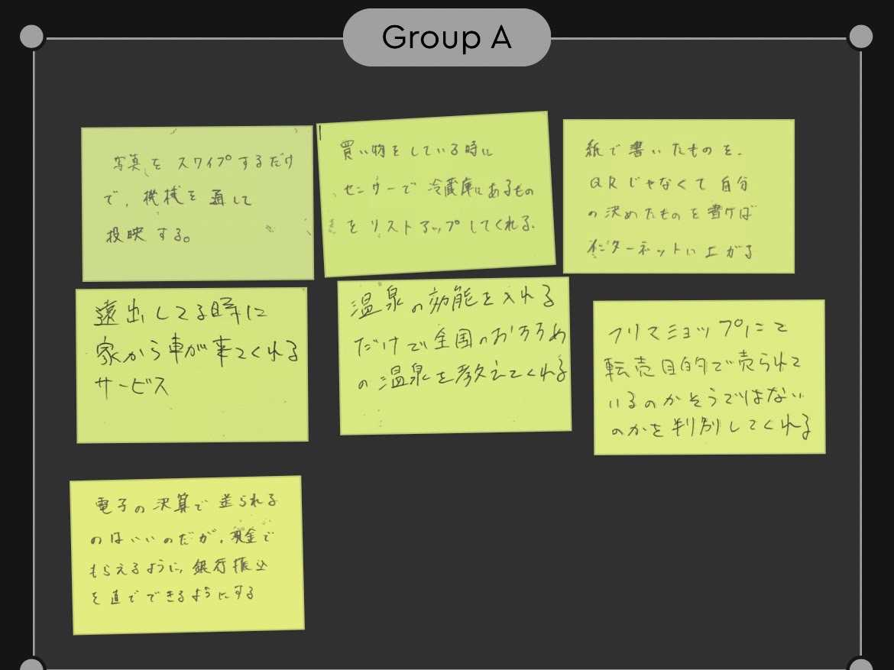
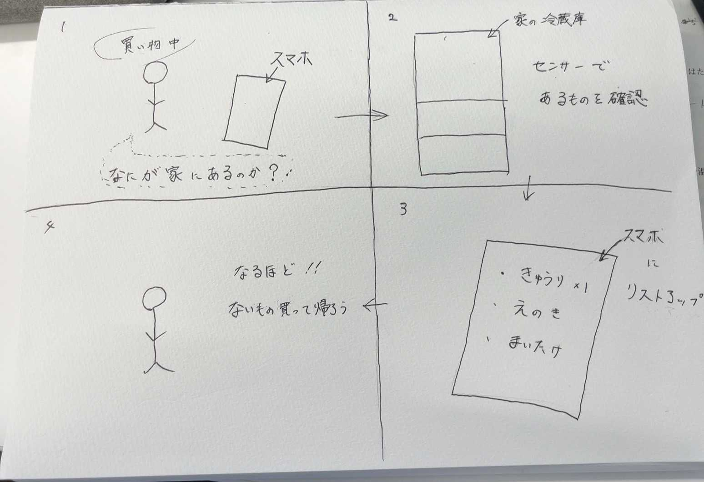

Iot遠隔操作、管理することでできる新しいサービス
1,グループワーク

グループ内話し合った結果、この前のようなちょっと非現実的なものから、
今あったら便利なものを中心的に意見をあげていきました。
特にいいなと思ったのは、2つ
1,paypayなどの送金機能に関して、送金できるのはうれしいのだがpaypayなどをやってない人
現金でほしい人には不便なので直接送金者が受け取り側の銀行に振り込めるようにすること
2,車なしで遠出している時に車を呼んだら車が呼んだ場所に来てくれるシステム
2,自分が考えた意見

よく買い物をしているときに母親が家に何がないか忘れたりしていたのを思い出したので、
それを解決できる意見を考えました。
買い物中に冷蔵庫のものがわからなかった時にスマホボタン一つで冷蔵庫のものをスキャンできるようにする。
スキャンしたものが買い物をしていた自分のスマホにリストアップされるようにする。
意見交換後の他人からの意見
・ 高い冷蔵庫にはスマホで中身をカメラで見ることができるやつがあるらしい
・ものの名前だけでなくて賞味期限、消費期限まで表示してくれるようになったらもっと便利じゃないか
などの意見をもらいました。